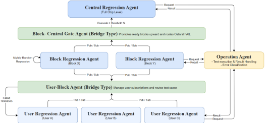
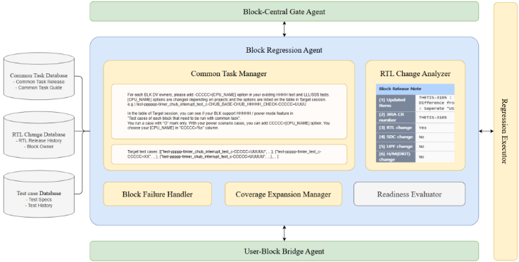

面向验证回归的三层 Agentic AI 框架
论文针对传统单体式回归系统不感知设计层次与验证范围、重复执行大规模测试集导致高延迟、资源浪费与重复调试的问题，提出将验证回归重构为 user、block、central 三层结构。方法上以 regression、bridge、operation 三类 agent 配合 RabbitMQ publish-subscribe 机制实现跨层异步协调：block 层基于 RTL 与 common task 变更自动触发 change-aware 回归，central 层由 gate agent 按 block pass rate 门控启动，并用 error classification 与 ownership routing agent 自动分类失败、按相似度匹配路由 owner 并对接 JIRA。关键结论包括：传统流程下 20,766 条 block 用例中 13.93% 在 chip 级回归启动时从未执行；分层门控使 chip 级回归在 block pass rate 约 91.2%/83.1% 时才启动，而传统流程仅约 23.6%；消融实验显示移除 block regression agent 会使 central regression 启动延迟约 36%。作者承认大规模量化评估仍在进行中，端到端 TAT 收益目前为定性观察。
传统单体式回归系统扁平且中心化，不区分设计层次、变更局部性与团队职责，重复执行大规模测试集，导致高延迟、可扩展性差与资源利用低；分布式多团队环境下回归状态视图不统一、结果聚合依赖人工，变更引入的失败可能在多个 release 中未被察觉并累积到 chip 级调试阶段，failure triage 与 owner 分配也大量依赖人工。
提出 3-tiered agentic AI 回归框架：将回归分为 user（将工程师发起的 sanity 回归形式化为显式层级）、block（change-aware 回归）、central（chip 级回归）三层；agent 分为三类——regression type agent（各层回归决策、用例晋升与延迟）、bridge type agent（user-block bridge 与 gate agent，基于 publish-subscribe 的跨层协调与晋升门控，gate 阈值典型为 90%-95%）、operation type agent（无状态执行组件：regression execution、error classification、ownership routing）。跨层通信采用 RabbitMQ topic exchange 与 routing key 实现异步 pub-sub 与故障隔离；执行经 adapter layer 适配异构验证环境，通过 filesystem MCP 接口与 in-house REST API MCP server 读写标准化 schema 的回归数据库；ownership routing 依据 block owner 数据库与历史 issue 相似度匹配（相似度超过 90% 时覆盖默认 owner）路由失败，并对接 JIRA 等 issue tracking 系统。
传统流程分析（33 个 design blocks）：20,766 条 block-level 测试用例中 2,892 条在 chip-level regression 启动时无执行记录，未执行率 13.93%；部分 block 缺失率超过 25%，单个 block 最多超过 1,100 条用例从未执行
传统流程中工程师在设计变更后需 2-3 天人工识别受影响用例并重跑回归；block regression agent 在 release 信息可用后立即触发回归，消除该延迟
分层门控下 central regression 分别在 block pass rate 约 91.2%（1,343 pass/130 fail/共 1,473 次执行）与 83.1%（501 pass/102 fail）时启动；传统流程在有效 pass rate 仅约 23.6% 时即启动 chip-level regression
消融实验 A1：移除 block regression agent 使 central regression 启动延迟约 36%，block 稳定性收敛变慢且跨 block 方差增大
消融实验 A2：移除 user-block bridge agent 后退化为轮询式 API 交互，协调延迟与集成开销增加、可扩展性与维护性下降；A3：用静态脚本替代 regression execution agent 导致容错、并行度与响应性下降、执行队列变长
论文结论承认大规模量化评估仍在进行中，端到端 TAT 改善目前为定性观察（减少冗余执行、压缩 turn-around-time），未给出完整量化数字
与已有 Jenkins CI 调度、ML failure triage、LLM/RAG 日志分析等在单体回归流水线上做局部优化的工作不同，本文从系统级重构回归架构：将工程师非正式、依赖工具的 sanity 回归形式化为显式 user tier，引入 change-aware block tier 与带门控晋升的 central tier，用 agentic AI 角色分解（regression/bridge/operation）加 publish-subscribe 骨干实现分层解耦、agent 动态挂载与跨团队统一数据驱动视图；强调回归治理、可追溯性与门控确定性，而非单纯优化 turnaround time。
相关度级别：high
命中能力域：2.4 设计验证方法学 | 2.7 EDA/验证自动化与 AI 辅助
理由：论文直接命中 2.4 的'回归与 CI、bug triage 与 debug 方法学'以及 2.7 的'验证流程自动化、脚本/框架/CI、AI 辅助验证'：三层回归分层、change-aware block 回归、门控晋升、失败自动分类与 owner 路由，正是团队在 LPDDR/HBM/UCIe 等多 block IP 交付中日常面对的回归治理与 triage 问题；其 agentic AI + MCP + pub-sub 的基础设施模式也为团队沉淀可复用验证自动化方法学提供直接参考。论文不涉及 IP 微架构、RTL/时序/物理实现或形式验证，与 2.1-2.3、2.5 无关；也不涉及仿真加速器/Emulation 本身，故不匹配 2.6。
建议动作：深入精读并做内部分享
面向验证回归的三层智能体AI框架
Jin Choi 1 , Sangwoo Noh 2 , Seonghee Yim 3 , Youngsik Kim 4 ( 1 jjin.choi; 2 sangwoo.noh; 3 sh.yim; 4 ys31.kim@samsung.com)
摘要——随着现代片上系统（System-on-Chip，SoC）设计的复杂度持续增长，验证回归在可扩展性、持续集成（Continuous Integration，CI）管理以及重复调试工作方面面临着日益严峻的挑战。传统的单体式回归系统在反复执行大规模测试集时，既不考虑层次化的设计边界，也不考虑验证范围，从而导致高延迟、可扩展性受限以及资源利用效率低下。针对这些局限性，本文提出了一种三层智能体AI回归框架，该框架将验证回归组织为三个层次化的层级——用户级、模块级和中央回归层级——每个层级对应不同的验证范围和目的。用户回归层级将由工程师发起的健全性回归（sanity regression）形式化为一个轻量级但明确的验证层级。与此同时，模块回归层级执行由设计和验证更新触发的变更感知回归，以便在早期阶段检测模块级的边界情况（corner case）。中央回归层级执行芯片级回归，并提供自动化的失败分类与责任归属路由。为协调这些层级，所提出的框架利用了模块化的基于智能体（agent）的组件，包括回归类型智能体、桥接类型智能体和操作类型智能体，它们共同实现回归执行与跨层级通信。这种智能体化设计使回归行为能够根据项目背景、团队特定的验证范围以及不断演进的验证目标进行动态调整，而不受静态流水线的约束。通过将分布式的回归活动组织为层次化结构，所提出的框架提供了跨团队、跨环境的统一且数据驱动的验证进度视图。此外，在所有三个层级上强制实施验证覆盖，降低了遗漏关键验证漏洞的风险，从而带来更加健壮且系统化的验证流程。该框架并非仅仅优化周转时间，而是强调在整个验证阶段改进回归治理、可追溯性以及基于充分信息的决策。本文为适用于大规模SoC验证的可扩展、自适应且自我管理的回归基础设施奠定了实践基础。
现代片上系统（System-on-Chip, SoC）设计的复杂度已达到前所未有的水平，集成了数千万门电路和数百个相互依赖的IP模块。因此，回归在设计验证中变得日益关键，它通过反复执行大量测试用例，确保设计在持续迭代过程中的功能正确性与稳定性。鉴于这种大规模的重复执行特性，验证回归本质上非常消耗资源，这促使人们持续投入大量精力来提升其效率与自动化水平。业界已提出多种方法来精简回归的执行与管理。在工业实践中，基于Jenkins的持续集成（CI）方法被广泛用于调度每日或每周的回归，或在代码变更时自动触发回归运行，从而减少人工执行开销并提高回归可用性 [1]。其他研究则聚焦于优化回归工作流程的特定环节，例如利用机器学习技术实现智能的失败分类与责任分配 [2]。近来，大语言模型（LLM）也被探索用于总结回归日志、提取失败模式，并通过基于检索增强生成（RAG）的数据访问来提升调试效率 [3]。尽管这些方法带来了有意义的改进，但它们大多仍在现有单体式回归基础设施的约束下运行。大多数现有方案只针对回归流程中单个阶段的局部优化——例如调度、失败分类或日志分析——而未触及回归本身的结构性局限。其结果是，回归系统仍然保持扁平化和集中式，执行宽泛的测试用例，而未能根据设计层次、变更局部性或团队特定职责来调整验证范围。
在大规模验证环境中，验证活动分布在多个团队和异构基础设施之上，这些局限性变得更加突出。在这种条件下，维持对验证回归状态的统一且一致的视图十分困难，跨环境聚合结果往往需要大量人工干预。此外，尽管LLM、基于智能体的AI以及模型上下文协议（MCP）服务器等新兴技术在改进验证工作流程方面展现出强大潜力，但将这些技术嵌入单体式回归流水线，从根本上限制了可伸缩性、可扩展性与长期可维护性。随着验证环境的规模与复杂度持续增长，单体式回归架构与新兴验证工作流程之间的这种结构性失配从根本上限制了效率，并引入了额外的验证开销。
为应对这些挑战，本文提出一种三层级智能体AI（agentic AI）回归框架，从系统级视角对验证回归进行重构。所提出的框架引入了由用户层（user tier）、模块层（block tier）和中心层（central tier）组成的三级层次化回归结构，在本文中每一层均被定义为验证粒度的逻辑抽象，具有特定的范围与目标。这种三层级验证回归以渐进方式执行，结果在各层级之间动态地晋升与降级，而非通过单一的整体式回归流水线来执行。该架构围绕基于发布-订阅的分层架构并结合模块化AI智能体而设计，通过异步发布-订阅（pub-sub）机制实现跨层级的松耦合协作。在所提出的框架中，嵌入了智能体AI组件，用于编排回归任务、管理层级间通信，并根据项目上下文和团队特定需求调整验证行为。通过将回归智能分布于多个专用智能体而非集中于集中式流水线，所提出的框架提供了一种可扩展且可维护的架构，改进了回归治理，并降低了分布式环境中出现验证缺口的风险。此外，该架构为将先进AI技术集成到验证工作流中奠定了坚实的基础。
本文提出了一种分层回归框架，通过明确定义的层级和通信接口来组织验证工作流。该框架通过在可扩展的系统架构内将回归活动划分到不同的层级，使每个层级能够履行特定的验证角色，并共同构成一个健壮且系统化的验证流程。所提出的框架进一步根据智能体的角色和通信模型，将其划分为三种功能类别：回归型、桥接型和操作型智能体。回归型智能体在各层级内执行并管理回归任务，而桥接型智能体则通过发布-订阅（publish-subscribe）机制充当各回归层级之间的中介，从而实现层级间的协调。操作型智能体执行测试分发与监控等辅助功能。这种分类兼具模块化与可扩展性：回归型智能体专注于各层级特定的验证目标，桥接型智能体同步跨层级的控制与数据交换，而操作型智能体则处理分布式环境中的运维任务。
回归型智能体代表了各回归层级内的核心验证智能。它们的首要职责是确定应执行哪些测试用例、如何解读回归结果，以及测试用例应何时在各层级之间被提升或推迟。尽管其范围和执行环境因层级而异，但所有回归型智能体都承担着管理各层级特定验证目标的共同角色。在用户层级，我们提出由用户回归智能体执行工程师发起的健全性回归（sanity regression），以及时提供反馈。模块回归智能体在模块层级运行，针对设计变更和验证成熟度执行定向回归与随机化回归，以评估模块级稳定性。在芯片层级，中央回归智能体执行全芯片集成回归，并进行结构化的错误分类，以支持故障分诊（failure triage）。在所提出的框架中，这些回归智能体被设计为不直接相互通信。相反，每个智能体都向对应的桥接型智能体注册，后者作为发布-订阅枢纽，充当各回归层级之间信息交换与协调的中介。这一设计选择在保持层级隔离的同时，使回归结果能够以受控且分层的方式传播。
我们引入桥接型智能体作为专门的协调组件，用于中介跨回归层级的通信。通过将层级间交互经由桥接智能体进行路由，该框架在解耦层级特定逻辑的同时，实现了整个回归系统内的分层协调。回归型智能体向其对应的桥接智能体注册，并通过异步发布-订阅机制交换回归结果与更新。这一设计使不同层级的回归活动能够独立推进，而无需紧密的结构耦合。该框架采用两个桥接智能体：用户-模块桥接智能体管理用户回归层级与模块回归层级之间的交互，将已验证的结果向上转发，同时将失败的测试用例向下重定向，以进行局部重新验证。门控智能体（gate agent）位于模块回归层级与中央回归层级之间，通过仅允许满足预定义稳定性阈值的模块通过来实施提升准则，从而确保未解决的问题始终被限制在其相应的验证范围内。通过这种基于桥接的结构，所提出的框架将回归执行与验证职责相分离，并支持回归实例的动态挂载与卸载，从而实现跨多个层级回归的并发执行。
本文引入操作型智能体来处理支持所有层级回归工作流的运维与集成任务。与负责验证决策的回归型智能体不同，操作型智能体旨在执行具体的系统级功能，例如测试用例分发、错误分类以及与外部基础设施的交互。这些智能体被有意保持为无状态，并按需调用，从而能够独立于特定层级的验证逻辑运行。所提出的架构通过对运维职责进行结构化组织，将验证控制逻辑与执行及集成关注点分离开来。这种分离提升了模块化程度，简化了运维能力的扩展，并使回归工作流能够在不影响核心回归系统的情况下进行扩展。
所提出的框架由三个层级组成：用户层级（user tier）、模块层级（block tier）和中央层级（central tier）。这些层级反映了实践中所观察到的验证范围的自然扩展过程，即从工程师本地验证开始，逐步推进至全芯片集成。每个层级独立运行，但都参与一个由层级间通信所管控的受控升级流程。跨层级的通信与同步由桥接（bridge）居中协调，桥接采用发布-订阅（publish-subscribe）模型，从而在保持各层之间功能独立性的同时实现异步协调。

图 1 展示了多个用户回归智能体（例如 user A、user B）并发运行的情形，每个用户回归智能体各自代表一位工程师的验证环境。每个用户回归智能体均订阅 userblock 桥接智能体（userblock bridge agent），后者作为协调层，负责汇聚执行结果，并将经过验证的测试用例发布给一个或多个模块回归智能体（例如 block X、block Y）。模块回归层级采用设计感知与随机化策略来管理针对特定模块的回归，并持续评估模块稳定性。一旦满足预定义的稳定性准则，门控智能体（gate agent）便会将已通过验证的模块提升至中央回归智能体，以执行全芯片回归。
用户回归层级将各个工程师的独立环境表示为验证的第一线，其中多个用户回归智能体并发运行，每个智能体对应特定的用户或开发工作区。在实际工作中，工程师会反复执行健全性回归以验证增量式的设计修改。在许多情况下，相同或相似的测试集会在较短的时间间隔内被重复执行。因此，由用户发起的回归表现出与模块级或芯片级回归根本不同的执行模式——例如执行频率、通过率和完成延迟。为适应这些特性，用户回归层级被设计为专注于实现对重复性健全性回归的系统化处理，同时将验证工程师的开销降至最低。相应地，该层级针对快速周转和频繁重复执行进行了优化，优先考虑低延迟的功能反馈而非穷尽式覆盖。该层级通过用户回归智能体实现，这些智能体通过跟踪健全性回归的频率、失败特征和平均执行延迟，以可度量的形式得出回归的量化摘要。由此，这些智能体在工程师驱动的回归活动与后续回归层级之间提供了结构化接口。通过将工程师发起的健全性回归建模为一个显式层级，所提出的框架将这种非正式且依赖工具的实践转化为整个回归系统中受控且可分析的组成部分。这种分离提升了整个回归过程的透明度和生产效率，并为向后续验证进行层级化晋升提供了稳定基础。
在验证的早期阶段，与设计和验证相关的更新频繁发生。然而，验证工程师往往缺乏足够的人力在每个发布节点手动识别受影响的测试用例并加以执行。因此，由增量变更引入的回归可能在多个发布版本中未被察觉地持续存在，导致难以确定失败是在何时何地被引入的。此类未解决问题的大量累积会显著增加芯片级后期调试的复杂性。为应对这一挑战，所提出的架构引入了模块回归层级，作为用户驱动的健全性回归与芯片级回归之间的中间验证阶段。该层级的主要目标是基于检测到的更新对模块级变更进行验证，并在推进至芯片级验证之前评估其稳定性。通过将回归约束在模块范围内，该层级能够对受变更影响的逻辑进行更彻底的验证，同时避免不必要的全芯片执行。

块级回归通过块级回归智能体运行，该智能体作为此层级的执行与控制机制，如图2所示。该智能体持续监控寄存器传输级（RTL）与通用任务的发布信息——其中通用任务定义了应用于多个模块的共享验证需求——并分析发布说明以识别受影响的设计模块。基于所记录的变更，该智能体推导出相应的模块范围测试用例及所需的执行选项，确保所有受变更影响的场景均得到执行。必要时，会纳入随机化执行，以扩展模块级覆盖率并减少对先前已执行过的有限场景集合的偏向。当检测到失效时，该智能体将失效分析限定在被修改的模块内，并向相应的模块负责人报告带有上下文信息的执行结果。此外，该智能体评估模块级执行的完整性与稳定性，以确定中央回归的准入标准，防止不稳定或不完整的结果传播到更高的回归层级。
所提出的框架通过将模块级回归引入为专门的验证层级，清晰地分离了验证职责；该层级将重复且易出错的手动任务自动化，例如执行因检测和解释修改而受影响的测试用例。这在模块级强制执行了执行完整性与准入约束，确保模块级验证以一致且明确定义的方式进行。由此，该框架提升了后续芯片级回归的质量与清晰度，减少了由未解决的模块级问题所造成的噪声，并使系统级失效分析更加有效。
中央回归层负责芯片级验证，重点关注多模块交互与芯片级集成。在所提出的框架中，该层的执行被设计为在模块级通过率达到用户定义的阈值（通常介于90%与95%之间）后启动，这表明模块级已具备足够的稳定性。这种门控策略确保中央回归资源的分配能够避免过早进行芯片级执行，并减少因未解决的模块特定问题而造成的不必要的资源消耗。在该层，回归执行与失败处理由一组专门化智能体协调管理，以应对全芯片验证的复杂性。错误分类智能体分析回归失败，并区分常见任务错误与领域特定错误，从而实现结构化且一致的失败归类。基于该分类，责任路由智能体将每个失败映射到相应的负责人，并通过在外部问题跟踪系统（例如 JIRA）中注册问题，传播包含失败特征与上下文元数据的汇总诊断信息。中央回归层中的智能体在保持整个验证回归工作流端到端可追溯性的同时，减少了人工干预。
所提出的框架采用基于消息队列的发布-订阅模型，并使用 RabbitMQ 实现，以协调用户层、模块层与中央层之间的回归活动。该设计与大规模验证回归的层次化和异步特性相契合，其中每一层在不同的验证范围和目标下运行。用户回归智能体持续发布健全性回归（sanity regression）结果，而不与模块级执行同步；而模块回归智能体仅在资源和稳定性条件允许时才消费经过验证的结果。中央回归则与较低层的瞬态活动进一步隔离，仅通过门控智能体（gate agent）发出的显式晋升（promotion）事件触发。这种分离使各层能够独立推进，同时在逻辑上保持互联。
该架构还在各层之间充当缓冲与隔离边界，防止用户发起的回归突发高峰使模块级基础设施过载，并确保由 RTL 设计变更触发的模块重新执行不会干扰正在进行的用户工作流。所提出的架构使用主题交换机（topic exchange）和路由键（routing key）选择性地将事件传递给桥接智能体，同时基于确认（acknowledgment）的消息处理机制支持受控重试与故障隔离。在该框架中，消息代理（message broker）提供底层传递机制，包括确认与重投递支持，而桥接智能体则应用由验证工程师定义的配置和运行时回归上下文所导出的重试与故障隔离策略，以控制回归事件在各层之间如何被解释和传播。该机制能够吸收瞬态执行或基础设施问题，而不会将不稳定性传播到各层，使回归进度在部分故障或处理延迟的情况下仍保持稳健。通过这种由消息代理中介的发布-订阅架构，所提出的框架能够在层次化回归各层之间实现异步且受控的验证投入，为在分布式验证环境中管理回归复杂性提供了可扩展的基础。
所提出的框架将操作类型智能体实现为面向执行的组件，负责执行具体的动作。这些智能体被设计为具有显式的输入和输出接口，并以基本无状态的方式运行。每个操作智能体从共享数据库中获取所需的执行上下文，而执行结果和元数据则在完成后被持久化保存。这种设计使操作智能体保持独立于执行历史，同时支持跨回归周期的可靠恢复与复用。
在此框架中，回归执行智能体将回归决策具体化为可执行的工作负载。在接收到执行请求后，该智能体会构建一个作业规范，其中编码了目标模块或系统范围、所选的测试用例、执行选项、工具版本以及种子策略。该规范通过专用的适配器层被转换为特定于环境的执行命令，从而使相同的智能体逻辑能够支持异构的验证环境。执行产物通过文件系统 MCP 接口进行交换，该接口在执行环境与智能体之间提供了一个受控且标准化的文件访问边界。该智能体通过观察指定文件系统路径中执行输出的创建与更新来监控作业进度。完成后，该智能体收集执行产物，包括结果摘要、仿真日志和覆盖率数据，并通过自研的 REST API MCP 服务器将提取的结果按照标准化的 schema 持久化到回归数据库中。
责任归属路由智能体消费已分类的失败记录，并基于预定义的模块级信息数据库以及借助外部问题跟踪工具 MCP 服务器检索得到的历史问题数据来确定责任归属。利用失败签名和相似度匹配，将失败记录与先前报告的问题进行比较，以识别相关的历史发生情况。在所提出的框架中，责任归属判定遵循一种简单的优先级策略。该智能体首先查询模块负责人数据库以建立默认的责任分配。当某个失败与先前报告的问题之间的相似度得分超过 90% 时，该智能体会覆盖默认映射，并将责任归属分配给最近一次匹配问题的负责人。该策略反映了这样一种假设：高度相似的失败很可能具有相同的根本原因，并且由熟悉近期相关问题的工程师来处理最为高效。
这些操作智能体通过显式接口访问共享数据库和外部系统，执行范围狭窄且定义明确的功能，从而为所提出的框架提供了具体的执行骨干。通过将操作专用智能体与回归逻辑分离，所提出的框架在回归与执行机制之间保持了清晰的区分。在本文中，该框架纳入了一组最小化的操作智能体以验证核心功能，同时模块化设计允许随着验证需求的演进对各个智能体进行扩展或替换，从而在不干扰整体回归架构的情况下实现渐进式增强。
本节对所提出的三层智能体式AI回归框架进行了实证评估，该评估在工业级片上系统（SoC）验证环境中开展，使用生产级设计验证数据集来评估其在实际验证工作流程中的有效性。本评估的目的是证明，与传统的单体式回归流水线相比，经智能体式AI增强的分层回归架构能够提升可扩展性与效率。评估聚焦于三个关键方面：(1) 模块级的执行完整性与资格判定强制执行，(2) 芯片级回归噪声与资源浪费的减少，以及 (3) 通过消融实验所证明的基于智能体的协调机制在架构上的重要性与功能性贡献。
在缺乏显式模块级回归层级的传统回归流程中，回归通常通过以下两种方式执行：在 RTL 设计更新后执行芯片级回归，或由工程师根据个人判断选择部分测试用例进行驱动执行。为了量化该方法的这一局限性，在首次芯片级回归启动之前，对 33 个设计模块的回归执行状态进行了检查。在 20,766 个模块级测试用例中，有 2,892 个测试用例在芯片级回归启动时尚无已记录的执行结果，整体未执行率为 13.93%。这些未执行的测试用例在各模块间分布不均，若干模块的缺失执行率超过 25%，仅其中一个模块就有超过 1,100 个从未执行过的测试用例。进一步分析表明，这些测试用例并非因优先级低而被有意排除，而是由于人工疏忽导致测试用例未被注册，或所需执行选项被无意遗漏所致。此外，由工程师驱动的执行所产生的结果往往分散在各个独立环境中，难以进行系统性汇总，并引入了执行条件和配置假设方面的不一致。其结果是，关键故障往往只能在回归的后期阶段才被检测到，从而使整体调试工作量增加，故障定位也变得更加困难。
由于在所有设计模块上执行完整回归的计算成本较高，本次评估是在具有代表性的模块上进行的，而非针对整个设计。所选模块的规模各不相同，从而能够在真实的验证约束条件下考察分层回归的影响。在用户回归层，系统对由工程师发起的健全性回归进行了持续观察和记录。用户回归智能体跟踪执行频率、结果以及与版本相关的历史记录，从而实现了对测试用例在通过与失败状态之间发生转换的时间点的可追溯性。在模块回归层，系统在检测到 RTL 设计变更后立即触发模块范围的回归。在传统工作流程中，验证工程师在设计变更后通常需要两到三天的时间来识别受影响的测试用例并重新执行回归。相比之下，模块回归智能体在发布信息一经可用时便立即启动回归执行，从而消除了这一延迟。
门控条件的影响在中央回归层级表现得十分明显。中央回归配置了较为宽松的晋升阈值，即 80% 的模块级通过率，只有在各个模块达到最低稳定性水平后才允许进行系统级执行。对于其中一个模块，所提出框架中的中央回归是在该模块在总共 1,473 次执行中取得 1,343 个通过和 130 个失败的测试用例之后启动的，对应约 91.2% 的通过率。对于另一个模块，中央回归是在该模块达到 501 个通过和 102 个失败的测试用例时开始的，通过率为 83.1%。在这两种情况下，中央回归都只在模块级稳定性确立之后才启动。相比之下，缺乏层级门控的传统回归流程则是根据工程师的主观判断，在模块仍处于大范围不稳定状态时便已启动。在一个观察到的实例中，第一个模块进入回归时有 1,206 个失败和 238 个通过的测试用例，而第二个模块进入时有 358 个失败和 245 个通过的测试用例。这对应约 23.6% 的有效通过率，表明芯片级回归是在验证极不充分的状态下执行的。即使在乐观假设下，进入回归的测试用例中也有近一半已经处于失败状态，导致大量资源浪费且诊断价值有限。这些观察结果凸显了层级回归的实际影响。通过将不稳定性限制在用户层级和模块层级之内，所提出的框架防止了过早的芯片级执行，并确保中央回归在明显更干净、更成熟的验证状态上运行。这一转变减少了不必要的仿真成本，同时使芯片级故障分析更加有效。结果表明，层级回归不仅仅是一种结构性改进，更是一种在现实验证约束下直接提升回归效率和结果质量的机制。
我们设计了一组受控消融场景，每个场景选择性地禁用一种代表性智能体类型，以验证各组件的独立影响。每个消融场景对应移除一种特定的智能体类型，从而使我们能够分离出其对整体回归框架的功能贡献。
| No. | Configuration | Description |
|---|---|---|
| A1 | No block regression agent | Remove block-level autonomous regression. |
| A2 | No user-block bridge agent | Disable pub-sub coordination; regression agents communicate directly. |
| A3 | No execution agent | Replace distributed execution/dependency modules with static scripts. |
| No. | Configuration | Description |
在移除模块回归智能体的 A1 消融场景中，由 RTL 设计变更触发的自主模块级回归被完全消除，包括随机化执行和设计感知执行。尽管用户发起的健全性回归结果仍被持续收集，且在工程师明确提出请求时仍可手动执行模块级回归，但模块级通过率的累积主要依赖于用户发起的回归。因此，与所提出的框架相比，模块稳定性的演化更为缓慢且不均衡。与所提出的框架相比，该场景减缓了模块稳定性的收敛速度，并在各模块之间引入了更高的方差，从而使中央回归的启动延迟了约 36%。这一延迟传播到整个工作流程，延长了各个模块达到预定义阈值所需的时间，导致端到端回归延迟整体增加。这些观察结果表明，模块级自主回归在加速稳定性形成和实现及时的层级推进方面发挥着关键作用。
在 A2 消融场景下，负责用户层级与模块层级回归之间层级协调的用户-模块桥接智能体被禁用，基于发布-订阅的协调机制被替换为回归智能体之间直接的点对点交互。在此配置中，我们为两个代表性模块实例化了模块回归智能体，并为负责验证这些模块的三名工程师实例化了用户回归智能体。在没有用户-模块桥接层的情况下，每个智能体都需要通过直接通信来交换回归状态和结果。然而，在独立运行的智能体之间直接发出和接收请求并不适合该运行环境。为了弥补这一不足，引入了一个基于数据库的 API 来存储回归结果并将其暴露给其他智能体。因此，模块回归智能体被迫周期性地轮询该 API 以检测来自用户回归智能体的更新，而不是异步地响应事件。这种基于轮询的交互增加了协调延迟，并引入了不必要的开销。此外，当新增一个用户回归智能体时，必须显式更新 API 模式和查询逻辑，以确保模块级智能体能够识别并聚合新的结果。智能体逻辑与协调机制之间的这种紧耦合降低了可扩展性，并增加了维护复杂度。总体而言，发布-订阅协调机制的缺失消除了事件驱动的解耦，削弱了故障隔离能力，同时带来了额外的集成开销。这一结果凸显了层级协调机制对于实现可扩展、可维护回归的重要性。
在 A3 配置中，负责依赖管理和执行监控的回归执行智能体被移除，这些功能由静态执行脚本所取代。尽管该配置保留了运行回归的能力，但执行过程与预定义脚本紧密耦合，缺乏监控、重试处理或依赖感知。因此，由瞬时基础设施问题引起的故障需要人工干预，且执行进度无法根据运行时条件进行自适应调整。此外，移除回归执行智能体还消除了输入驱动的环境配置，而此前该配置使执行能够针对不同的验证环境进行动态定制。在基于静态脚本的设置下，支持此类变化需要手动调整脚本选项，或为每种配置调用单独的脚本，这增加了操作开销和维护复杂性。而且，基于静态脚本的执行限制了并行性，降低了对工作负载波动的响应能力，导致在并发回归请求下执行队列更长。缺乏集中式执行监控也降低了对作业状态的可见性，并延迟了故障检测。总体而言，这些影响增加了执行延迟并限制了可扩展性，表明专用的回归执行智能体对于实现稳健的故障处理、高效的资源利用以及跨多种验证环境的灵活执行至关重要。
纵观 A1-A3 消融场景，结果一致表明，每种智能体类型都为所提出的层级回归框架贡献了独特且互不重叠的作用。移除模块回归智能体（A1）延迟了模块级稳定性的收敛，并显著增加了触发中央回归所需的时间。禁用用户-模块桥接智能体（A2）将以发布-订阅为基础的协调方式替换为智能体间的直接交互，迫使通过外部 API 进行基于轮询的结果交换。这消除了事件驱动的解耦，增加了协调延迟和集成开销，最终降低了回归工作流的可扩展性和可维护性。用静态脚本替换回归执行智能体（A3）则因移除了故障处理和输入驱动的环境配置而降低了执行的稳健性和可扩展性。综合来看，这些结果证实，模块级自主性、层级协调和执行编排对于实现可扩展且可维护的回归管理都至关重要。此外，研究结果表明，其他智能体提供了完整且稳健的回归框架所需的互补功能。
本文提出了一种三层智能体式AI（agentic AI）回归框架，该框架通过将回归范围与设计变更的局部性及验证成熟度对齐，对验证工作流进行了重构。三层架构借助发布-订阅（publish-subscribe）主干，使验证活动能够在适当的集成层级上执行，从而支持芯片级回归的可扩展互操作性与异构验证环境。该框架还利用了被划分为三种类型的智能体式AI组件，以承担验证回归中各自不同的职责。这种职责分离使回归工作流得以摆脱僵化的、脚本驱动的执行方式，转向一个结构化且可扩展的框架。由此，所提出的框架使回归变得更加可预测、可追溯，并能对持续进行的设计变更保持灵敏响应，同时通过显式的门控条件保持确定性控制。
尽管大规模定量评估仍在进行中，但早期实验结果与部署观察结果表明，所提出的分层门控与智能体驱动的编排显著减少了冗余的回归执行，并压缩了验证回归的周转时间（turn-around-time）。特别是，在中央回归之前强制执行模块级准入标准，可防止不稳定或不完整的验证状态传播到芯片级，从而使失败噪声和重跑开销得到可测量的降低。因此，大部分验证问题能够在用户回归层和模块回归层被检测并解决，使中央回归能够主要专注于真正的系统级集成行为，而非模块局部的不稳定问题。
所提出架构的有效性源于三层架构与基于发布-订阅结构的智能体角色分解之间的协同交互。分层组织将验证范围与设计变更的局部性及验证成熟度对齐，明确了验证应当在哪一适当层级执行。与此同时，智能体角色分解将验证决策与协调及执行职责相分离，提升了整个回归工作流的可管理性和可扩展性。发布-订阅主干支持回归状态以异步且容错的方式传播，同时避免了各层之间的紧耦合。因此，在持续的设计变更和分布式验证环境下，验证回归依然保持稳定，而单体式脚本化回归流水线在此类环境下则难以维持。
作为未来工作的一部分，所提出的框架将扩展到多项目、多团队环境，在这些环境中，跨 IP 依赖和共享基础设施进一步增加了对受控回归工作流的需求。后续工作还将致力于通过在变更分析和故障分类中纳入更丰富的上下文信号，来强化智能体 AI（agentic AI）在所提出框架中的作用。这些信号包括非结构化的设计讨论、历史调试轨迹，以及先前未被使用、目前在常规回归工作流中利用不足的验证产物。最后，与基于 MCP 的工具的集成将进一步标准化智能体与外部系统的交互，从而实现更稳健的工具互操作性和可扩展性。这些扩展的目的并非取代人类专业知识，而是系统地减少人工协调开销，使工程师能够专注于高价值的调试和验证本身。
总而言之，所提出的三层智能体 AI 回归框架不仅仅是对验证回归工作流的结构性重组。它提出了一种具体的架构方法，将回归转变为一种受管理且自主的验证过程，该过程具备用于中央回归强制执行和故障局部性保持的明确判定准则，同时在设计复杂度和验证规模不断增长的情况下保持可扩展性。通过将回归智能分布于各专用智能体中，所提出的框架能够实现有效的回归治理，同时为将 AI 驱动的能力集成到验证工作流中提供了坚实的基础。